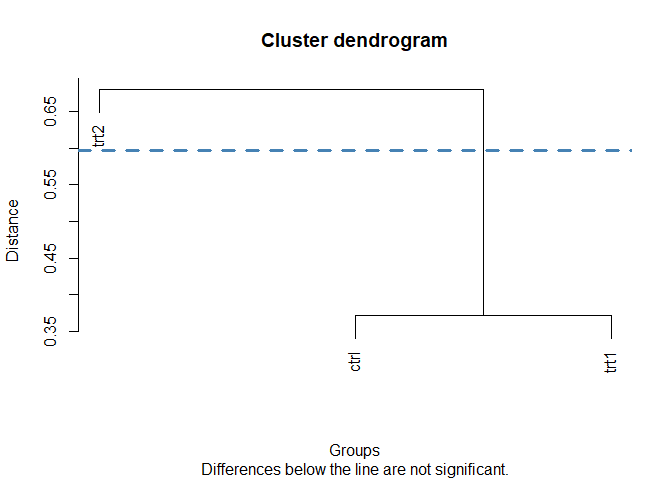
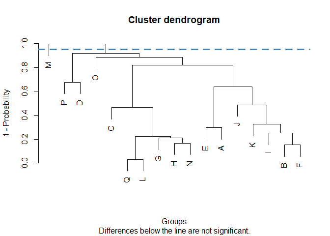

🇬🇧 ClustMC implements cluster-based multiple comparisons tests. These tests apply clustering techniques to group the means of different treatments into non-overlapping clusters, with treatments considered statistically different if they are in separate groups.
All tests included in the package share similar features:
- Inspired by the agricolae package, it is possible to work with either two vectors (one for the response variable and one for the treatments) or a model (created with
lm()oraov()). In the latter case, the name of the variable with the treatments must be specified. - After applying the corresponding method, a table containing the treatments and their group (indicated by a number) is printed to the console. Treatments within the same group are not significantly different. The user can choose not to display the table.
- By default, a dendrogram is plotted. The dendrogram can be customized with any argument passed to the
plot()function. In addition, the data used to create the plot is made available to the user, so it is possible to use other libraries such as ggplot2.
🇪🇸 ClustMC implementa pruebas de comparaciones múltiples basadas en conglomerados. Estas pruebas aplican técnicas de clustering para agrupar las medias de los distintos tratamientos en conglomerados no superpuestos, considerándose los tratamientos estadísticamente diferentes si se encuentran en grupos separados.
Todos los tests incluidos en el paquete tienen características similares:
- Basándose en el paquete agricolae, es posible trabajar con dos vectores (uno para la variable respuesta y otro para los tratamientos) o con un modelo (creado con
lm()oaov()). En el segundo caso, se debe indicar el nombre de la variable con los tratamientos a comparar. - Luego de aplicar el método correspondiente, se imprime en la consola una tabla con los tratamientos y el grupo al que han sido asignados (indicado por un número). Los tratamientos dentro del mismo grupo no son significativamente diferentes. Se puede optar por no mostrar estos resultados.
- Por defecto, se grafica un dendrograma. El dendrograma puede ser personalizado con cualquier argumento de la función
plot(). Además, el usuario tiene acceso a los datos usados para crearlo, por lo que es posible recurrir a otros paquetes como ggplot2.
Installation / Instalación
The package can be installed from CRAN: / El paquete puede instalarse desde CRAN:
install.packages("ClustMC")The development version is available from GitHub: / La versión en desarrollo está disponible en GitHub:
remotes::install_github("SGS2000/ClustMC")Examples / Ejemplos
Tests
🇬🇧 The following example applies the Di Rienzo, Guzmán, and Casanoves test to evaluate whether there are significant differences between the yields obtained under a control and two different treatment conditions. In this case, vectors are passed as arguments.
🇪🇸 El siguiente ejemplo aplica la prueba de Di Rienzo, Guzmán y Casanoves para evaluar si existen diferencias significativas entre los rendimientos obtenidos bajo una condición de control y dos condiciones de tratamiento diferentes. En este caso, se pasan vectores como argumentos.
library(ClustMC)
data(PlantGrowth)
plants_weights <- PlantGrowth$weight
plants_trt <- PlantGrowth$group
dgc_test(y = plants_weights, trt = plants_trt)
#> group
#> ctrl 1
#> trt1 1
#> trt2 2
#> Treatments within the same group are not significantly different🇬🇧 In the following example, a dataset with results from a bread-baking experiment is used. An ANOVA model is fitted, with the volume of the loaves as a response variable and the amount of potassium bromate and the variety of wheat as explanatory variables. The Jolliffe test is then applied to evaluate differences between the 17 varieties.
🇪🇸 En el siguiente ejemplo, se utiliza un dataset con los resultados de un experimento de panadería. Se ajusta un modelo ANOVA con el volumen de los panes como variable respuesta y la cantidad de bromato de potasio y la variedad de trigo como variables explicativas. La prueba de Jolliffe se aplica luego para evaluar las diferencias entre las 17 variedades.
library(ClustMC)
data(bread)
anova_model <- aov(volume ~ variety + as.factor(bromate), data = bread)
jolliffe_test(y = anova_model, trt = "variety")
Customizing plots / Personalizar gráficos
🇬🇧 Dendrograms can be customized, using any argument available for the plot() function. In the case of the lines, arguments for the abline() function must be passed as list. For a detailed explanation and examples, check vignette("CustomPlots").
🇪🇸 Los dendrogramas pueden ser personalizados, utilizando cualquier argumento disponible para la función plot(). En el caso de las líneas rectas, se debe utilizar una lista conteniendo argumentos para la función abline(). Para ver una explicación detallada y ejemplos, revise vignette("CustomPlots").